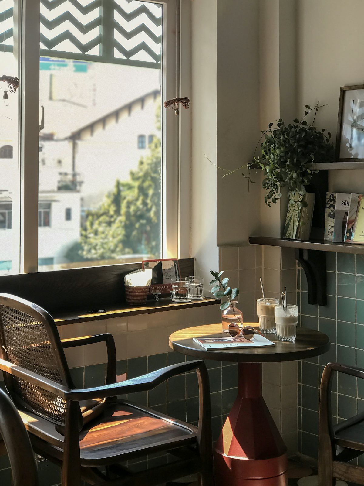
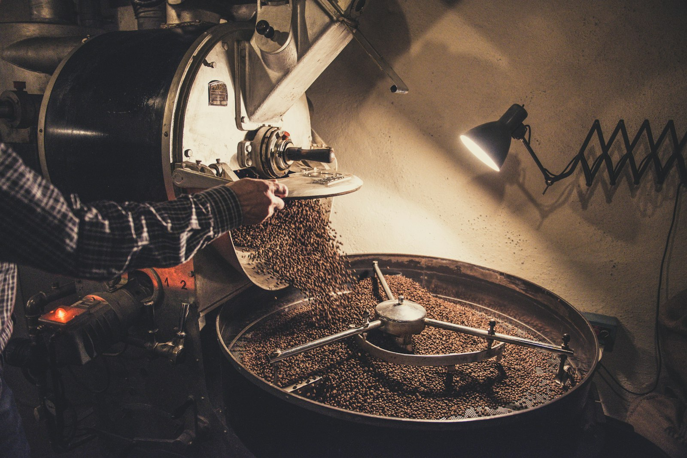
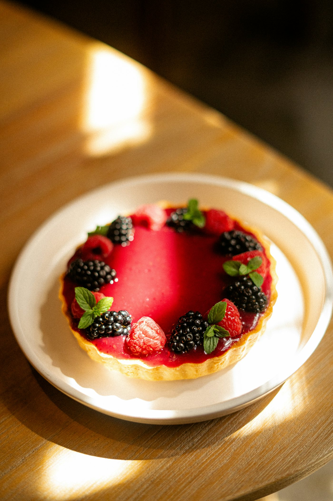
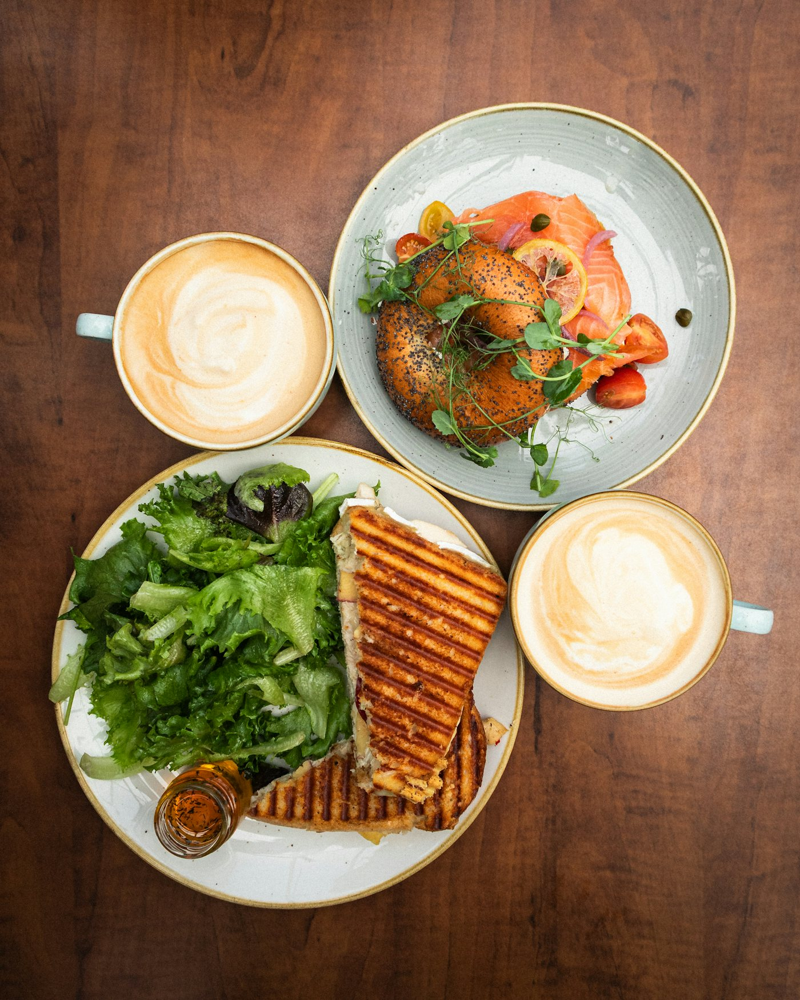

COFFEE & BAKE · HACHIOJI
八王子の住宅街にある、コーヒーと焼き菓子のお店です。ひとりの時間にも、誰かとのおしゃべりにも。


ABOUT
豆は八王子の焙煎所から仕入れ、焼き菓子は毎朝お店で焼いています。木のぬくもりのある店内で、ゆっくりお過ごしください。
PICK UP
中深煎り。毎朝お店で淹れています。

旬の果物をのせた、手づくりのタルト。

11:30〜14:00。スープとサラダ付き。
NEWS